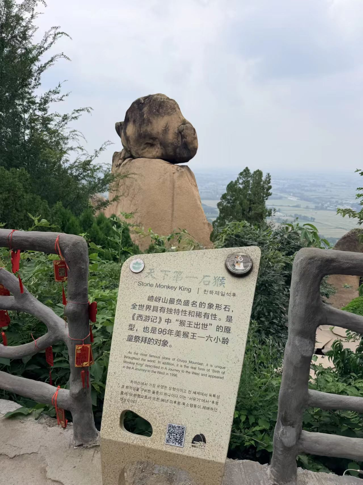
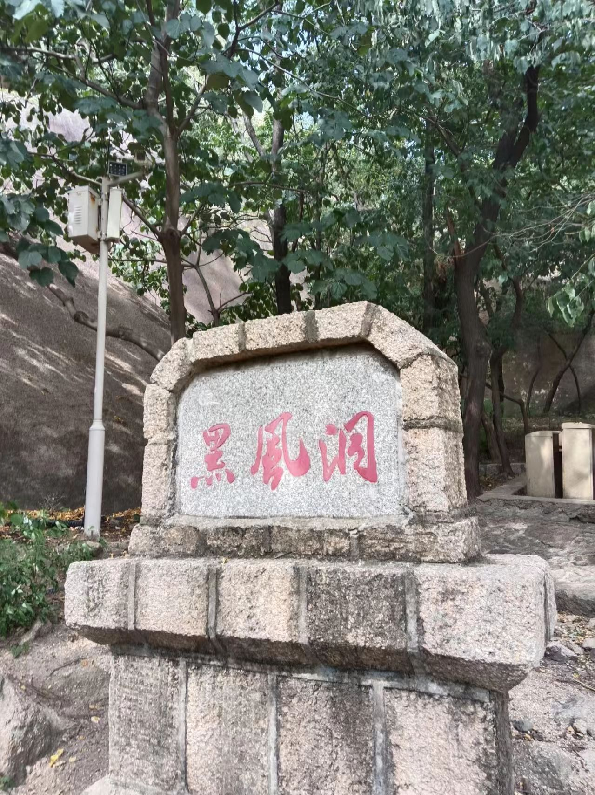
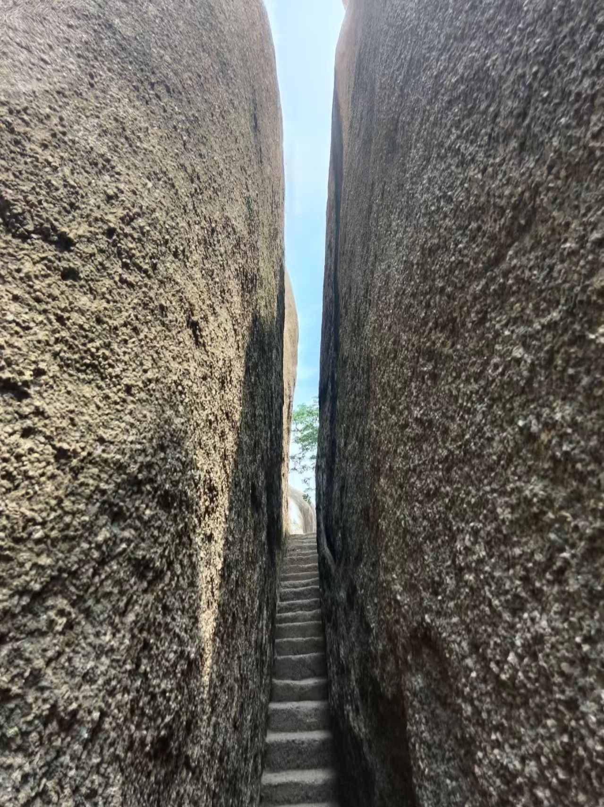
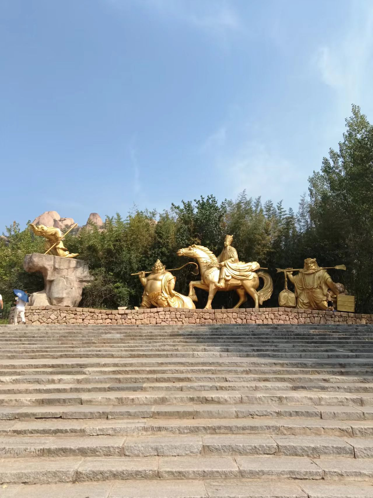
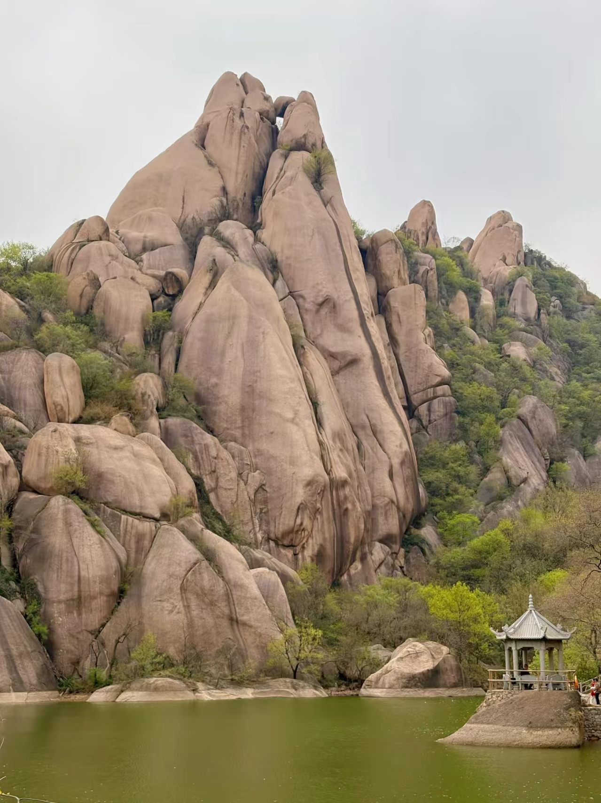

1. 石猴院
景区标志性景观，矗立19米天然象形石猴，是电视剧《西游记》"石猴出世"镜头原型。奇石神态酷似端坐的美猴王，周边分布七十二形态小石猴，一步一景，是游客必打卡地标。
九大奇观 · 九大名峰 · 九大名洞

景区标志性景观，矗立19米天然象形石猴，是电视剧《西游记》"石猴出世"镜头原型。奇石神态酷似端坐的美猴王，周边分布七十二形态小石猴，一步一景，是游客必打卡地标。

九大名洞之首，天然幽深溶洞，洞内恒温18℃，暗河、钟乳石遍布，为《西游记》黑熊精洞府取景地。洞内通道曲折狭窄，探险氛围感十足，也是夏季避暑的绝佳去处。

网红奇石峡谷，两侧百米高岩壁对峙，最窄处仅0.8米，仅容单人侧身通行，抬头仅见一缕天光，岩壁纹理苍劲，广角拍摄极具视觉冲击力。

北部核心水景，湖面开阔澄澈，奇石环湖倒映，1998年西游记剧组在此拍摄取经渡河戏份。可乘船泛舟、湖边露营，也是婚纱摄影热门取景地。

景区入口文化地标，设有师徒四人雕塑、西游主题浮雕，每日定时上演西游实景舞台剧，沉浸式感受神话故事氛围。